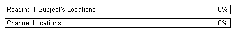

readloc.m - Read the .loc file that is read by opt3d, and create the bananas
Dr. Kyle Mathewson - Translation of Gabriele Gratton's opt3d_fast_v2.f90
This subroutine gets the information about the locations of the sources and detectors for each subject, and determine the 3-D
locations associated with each channel. The 3-D locations are determined as a series of equidistant points along a semicircular
arch between the source and the detector.
In the present implementation, the locations can be expressed in Talairach coordinates.
Each source or detector location is identified by a label.
This routine uses a file (suggested extension: .loc) in which the following info needs to be provided:
first row: name of a VMI file where an anatomical image is stored
second row: name of a TAI file where eight reference points are stored (see Talairach routine)
third row: number of sources and number of detectors
EDIT THIS
a row for each subject with: (a) a value (+1 or -1) that will inidcate whether the left to right dimension needs to be inverted
(b) the extended name (including path) of the file where the montage is described
(c) the extended name (including path) of the .ELP file where the digitized location of each source
and detector are stored (this also includes the appropriate labels)
(d) the extended name (including path) of a file where the EMSE coordinates of the eight points
used for the Talairach transformation are stored
The montage file is a file made up of one row for each channel.
This row contains the labels for the source and detector locations, the wavelength, and the modulation frequency.Contents
setup workspace and define function
function readloc(fname_loc)
global prm maxprm loc coordinates
setup progress bar
plural = 's';
if prm.nsubj == 1
plural = '';
end
progressbar(['Reading ' num2str(prm.nsubj) ' Subject''s Locations'], ...
'Channel Locations');

setup head/banana shape models???
for i=0:9
sines(i+1)=sin((i).*3.14159./10.);
cosines(i+1)=0.5.*(1.-cos((i).*3.14159./10.));
end
set channel wavelength to its default value = 0
loc.iwave = zeros(maxprm.knc,maxprm.kns);
load montage information for .loc file
fid_loc = fopen(fname_loc,'r');
[mrifile]=fgetl(fid_loc);
[taifile]=fgetl(fid_loc);
nsources=fscanf(fid_loc,'%g',1);
ndets=fscanf(fid_loc,'%g',1);
dum = fgetl(fid_loc);
Error using readloc (line 44)
Not enough input arguments.
load MRI data
loadmri(mrifile,taifile);
Read coordinates of each location for each subject
for isub=1:prm.nsubj
fprintf(['Sub ' num2str(isub) '. ']);
for j=1:maxprm.knc
loc.xmf(j,isub)=1.;
end
i_direct=fgetl(fid_loc);
fname_mtg=fgetl(fid_loc);
fid_mtg = fopen(fname_mtg,'r');
mtglabel=fgetl(fid_mtg);
if prm.nchans<=96
prm.nch(isub)=prm.nchans.*prm.nses;
else
for j=1:prm.nses
prm.nchses(j,isub)=fscanf(fid_mtg,'%g',1);
end
prm.nch(isub)=0;
for j=1:prm.nses;
prm.nch(isub)=prm.nch(isub)+prm.nchses(j,isub);
end
end
for j=1:prm.nch(isub)
inch(1,j,isub)=fscanf(fid_mtg,'%g',1);
inch(2,j,isub)=fscanf(fid_mtg,'%g',1);
montage{1,j}=fscanf(fid_mtg,'%s',1);
montage{2,j}=fscanf(fid_mtg,'%s',1);
iwavexx=fscanf(fid_mtg,'%g',1);
xmfxx=fscanf(fid_mtg,'%g',1);
if iwavexx==690
loc.iwave(j,isub)=1;
end
if iwavexx==830
loc.iwave(j,isub)=2;
end
loc.xmf(j,isub)=xmfxx./110.;
end
fclose(fid_mtg);
fname_tol=fgetl(fid_loc);
fid_tol = fopen(fname_tol,'r');
ilocations=nsources+ndets;
temp_line ='xx';
line_count = 0;
while temp_line~= -1
temp_line = fgetl(fid_tol);
line_count = line_count+1;
end
if line_count < ilocations
ilocations = line_count-1;
end
fclose(fid_tol);
fid_tol = fopen(fname_tol,'r');
coordinates = zeros(3,ilocations);
iline=0;
for j=1:ilocations
labels{j}=fscanf(fid_tol,'%s',1);
coordinates(2,j)=str2num(fscanf(fid_tol,'%s',1));
coordinates(1,j)=fscanf(fid_tol,'%g',1);
coordinates(3,j)=fscanf(fid_tol,'%g',1);
iline=iline+1;
for k=1:3
coordinates(k,j)=coordinates(k,j).*0.1;
end
end
fclose(fid_tol);
ilocations=iline;
for ichan=1:prm.nch(isub)
sourcex=0;
detector=0;
for k=1:ilocations
curr_labels=labels(k);
if strcmp(deblank(montage(1,ichan)),deblank(curr_labels))
sourcex=k;
end
if strcmp(deblank(montage(2,ichan)),deblank(curr_labels))
detector=k;
end
end
if isub==1
if sourcex==0||detector==0
infomsg=sprintf(['%s','%3i'],' Source or detector not found for channel ',ichan);
fprintf([infomsg '\n']);
infomsg=sprintf(['%s','%s','%s'],' Source & Detector: ',montage{1,ichan},' ',montage{2,ichan});
fprintf([infomsg '\n']);
for k=1:ilocations
infomsg=sprintf(['%s','%s'],' Labels available: ',labels{k});
fprintf([infomsg '\n']);
end
return
end
end
for k=1:3
curr_coords(k,1,ichan)=coordinates(k,sourcex);
curr_coords(k,2,ichan)=coordinates(k,detector);
end
for kk=1:10
for k=1:3
surfcoord(k,kk)=cosines(kk).*curr_coords(k,1,ichan)+(1.-cosines(kk)).*curr_coords(k,2,ichan);
if i_direct<0
surfcoord(2,kk)=-surfcoord(2,kk);
end
end
end
loc.dst(ichan,isub) = sqrt( sum( (curr_coords(:,1,ichan)-curr_coords(:,2,ichan)) .^2) );
loc.sloc(1:3,ichan,isub) = curr_coords(:,1,ichan);
loc.dloc(1:3,ichan,isub) = curr_coords(:,2,ichan);
loc.sdst(ichan,isub) = sqrt( sum( curr_coords(:,1,ichan).^2));
loc.ddst(ichan,isub) = sqrt( sum( curr_coords(:,2,ichan).^2));
loc.adst(ichan,isub) = .5*(loc.sdst(ichan,isub)+loc.ddst(ichan,isub));
scat2=prm.scatcoef;
abs2=prm.abscoef;
scat2=prm.scatcoef.*2.;
abs2=prm.abscoef.*2.;
if loc.iwave(ichan,isub)==2
scat2=scat2.*0.3;
abs2=abs2.*0.2;
end
depth=0.5+0.5.*sqrt(loc.dst(ichan,isub)./sqrt(300..*scat2.*abs2));
if prm.idata==2||prm.idata==4||prm.idata==5
depth=depth.*1.5;
end
radius=0.0;
for k=1:3
radius=radius+surfcoord(k,5+1).^2;
end
if radius<0.0001
radius=0.0001;
end
radius=sqrt(radius);
for kk=1:10
for k=1:3
prop(k)=surfcoord(k,kk)./radius;
end
for k=1:3
loc.recd(k,kk,ichan,isub)=((radius-depth.*sines(kk))./radius).*prop(k);
end
for k=1:3
loc.recd(k,kk,ichan,isub)=loc.recd(k,kk,ichan,isub).*radius;
end
rsltn=prm.resol;
if loc.iwave(ichan,isub)==2
rsltn=1.25.*prm.resol;
end
loc.recd(4,kk,ichan,isub)=rsltn.*(0.5+0.5.*sines(kk));
end
frac2 = ichan/prm.nch(isub);
frac1 = ((isub-1)+frac2) / prm.nsubj;
progressbar(frac1,frac2);
end
end
loc.recd(5,:,:,:) = zeros;
fprintf('Done. \n');